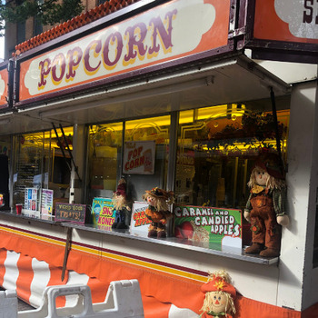
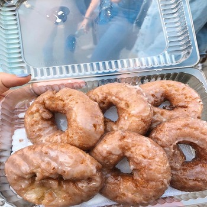
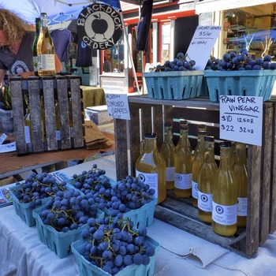
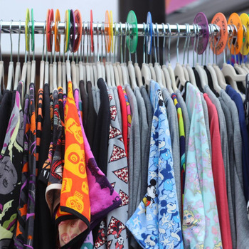
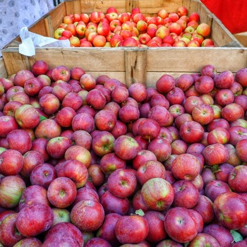
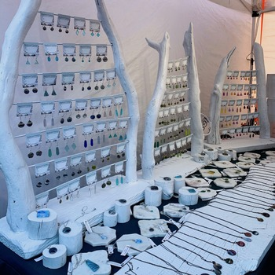
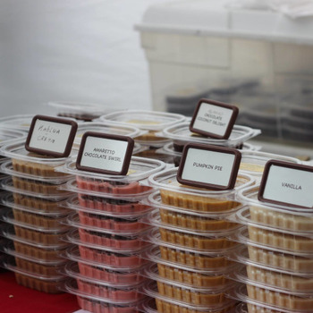
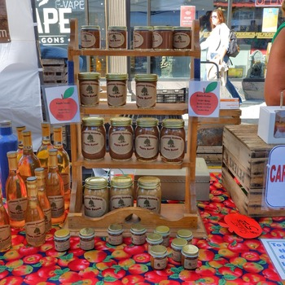
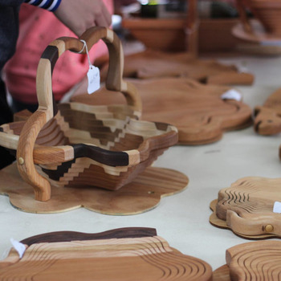

Student design project · Historical 2024 event guide · Not the official festival website
Gallery









Student design project · Historical 2024 event guide · Not the official festival website








